本作品更新的進度到能夠新增、刪除番茄鐘，及更改番茄鐘的鈴聲；尚無編輯及統計番茄的功能。
期待這個活動已久，今天總算開賽了！
作品 Lynn 的 F2E 2nd 作品列表 / 第一關：番茄鐘
設計稿 這次的精神時光屋分為設計組跟前端組，前端組可以使用設計組的成果來製作網頁。設計稿 ，因此決定採用這個設計。
使用資源 設計稿裡面有提供所使用的字體、Icon及音效來源。
字體 設計稿中所使用的字體為Google提供的Roboto ，在網頁中選擇字體後，就會產生用來嵌入字體的語法；將語法貼到頁面的 <head> 就可以了。
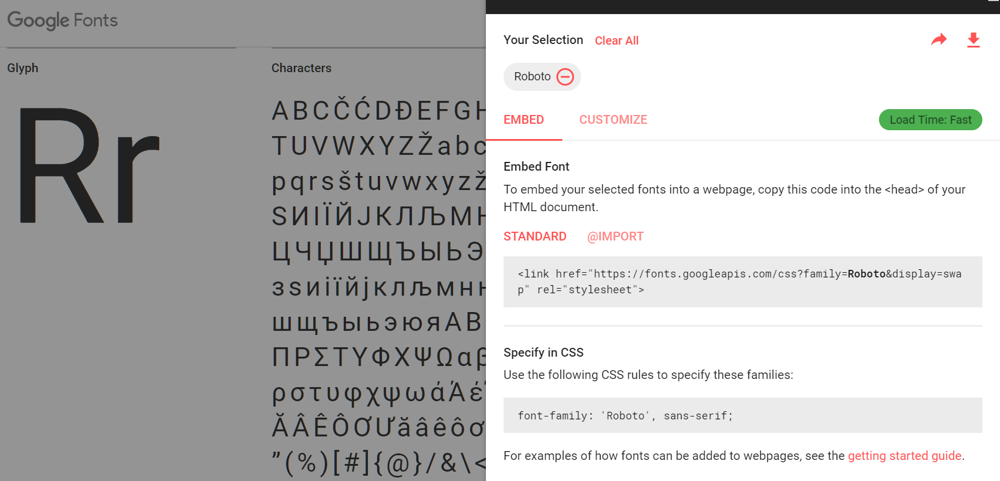
Icon Material Design > Tools > Icons
會用到的Icon名稱如下：
play_circle_filled
play_circle_outline
pause_circle_filled
list
library_music
assessment
初試啼聲
由於沒什麼經驗，以下採取亂無章法「有什麼做什麼」的流水帳方式。
HTML 結構 原先我想可以把設計稿的版面可以分為兩頁：一是主要的番茄鐘畫面，二是其他的功能。其他功能雖然又分為三頁，但可以用隱藏區塊的方式做在同一頁上。
以下是有點長又充滿註解的 HTML 結構（還有很多細節要修改）：
1 2 3 4 5 6 7 8 9 10 11 12 13 14 15 16 17 18 19 20 21 22 23 24 25 26 27 28 29 30 31 32 33 34 35 36 37 38 39 40 41 42 43 44 45 46 47 48 49 50 51 52 53 54 55 56 57 58 59 60 61 62 63 64 65 66 67 68 69 70 71 72 73 <body > <div class ="timer" > <div class ="content" > <input type ="text" placeholder ="ADD A NEW MISSON..." id ="addMission" > <h2 id ="currentMission" > </h2 > <div class ="time" > </div > <ul class ="todo" > </ul > <a href ="#" > MORE </a > </div > <div class ="play" > </div > </div > <div class ="window" > <div class ="left" > <ul class ="menu" > <li > <img src ="img/baseline-list-24px.svg" alt ="" > TO-DO LIST</li > <li > <img src ="img/baseline-assessment-24px.svg" alt ="" > ANALYTICS</li > <li > <img src ="img/baseline-library_music-24px.svg" alt ="" > RINGTONES</li > </ul > <div class ="bottom" > </div > </div > <div class ="todolist" > <h3 > TO-DO</h3 > <ul class ="dropdown" > </ul > <h3 > DONE</h3 > <ul class ="dropdown" > </ul > </div > <div class ="analytics" > <h3 > FOCUS TIME</h3 > <h3 > CHART</h3 > </div > <div class ="ringtones" > <h3 > WORK</h3 > <input type ="radio" name ="work" value ="NONE" > <h3 > BREAK</h3 > <input type ="radio" name ="break" value ="NONE" > </div > </div > <div class ="right" > <ul class ="menu" > </ul > <h1 > POMODORO</h1 > </div > </body >
如果看起來太雜亂，以下是示意圖：
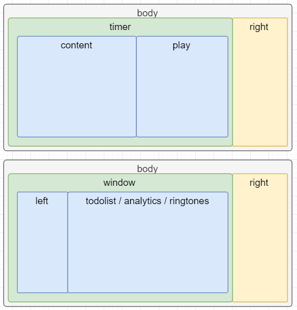
CSS 撰寫
由於沒有用什麼厲害技術，一切採取「總之刻就對了」的態度。
CSS Reset 使用myeyerweb.com 的reset。
大區塊排版 首先要讓網頁的門面是對的，所以先從一進入網頁就會看到的畫面著手，也將一開始不會顯示的區塊隱藏起來。
依據原本的架構，應該在 body 用 width:1280px ，後來想到應該讓整個畫面置中，所以增加了 .wrap 包在 body 裡面。
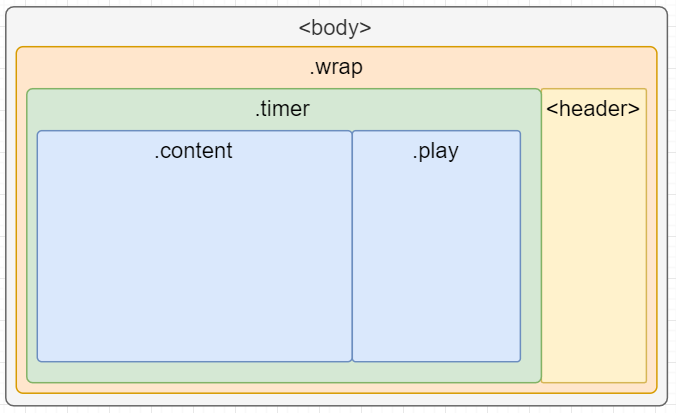
1 2 3 4 5 6 7 8 9 10 11 12 13 14 15 16 17 18 19 20 21 22 23 24 25 26 27 28 29 30 31 32 33 .window { display : none; } .wrap { display : flex; width : 1280px ; justify-content : center; } .timer { display : flex; justify-content : center; width : 86.9375% ; background-color : #FFEDF7 ; background-image : linear-gradient (to right, #FFEDF7 75.4545% , #003164 24.5455% ); } .timer .content { width : 50.9091% ; height : 800px ; } .timer .play { width : 49.0909% ; height : 800px ; } header { width : 14.0625% ; height : 800px ; background-color : #003164 ; }
header 分為上面的連結部分，和下面的標題部分；用 flexbox 將兩者靠右、貼上跟貼下，再用 margin 和 transition 調整位置。
1 2 3 4 5 6 7 8 9 10 11 12 13 14 15 16 17 18 19 20 21 22 23 24 25 26 27 28 29 30 31 header { display : flex; align-items : flex-end; justify-content : space-between; flex-direction : column; } header ul { width : 36px ; margin-right : 85px ; min-height : auto; } header li { margin-top : 48px ; width : 36px ; height : 36px ; fill : #FFF ; } header h1 { font-size : 24px ; line-height : 36px ; font-family : Roboto; font-weight : bold; color : #FFF ; transform-origin : 100% 0 ; transform : rotate (90deg ) translateX (121px ); padding : 85px 48px 0px 0px ; width : 165px ; }
SVG 處理 要如何使用並調整 *.svg 的尺寸跟顏色呢？
1 將 *.svg 中的原始碼貼到 HTML 檔中。
到此為止，網站的樣貌：
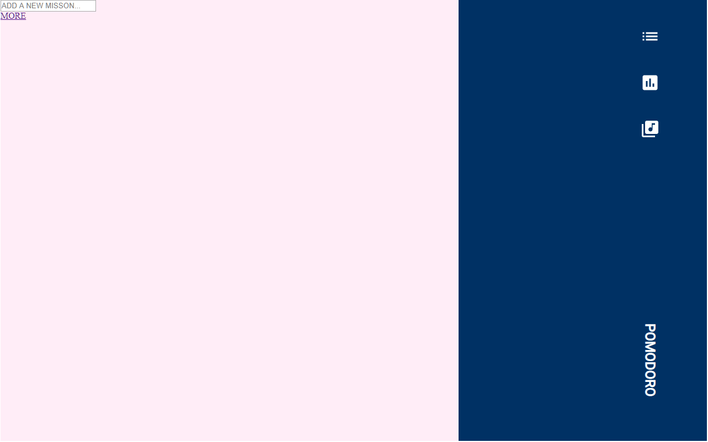
.timer 排版 .timer 分為左側的主要資訊和右側的播放大圓。架構經過調整後如下：
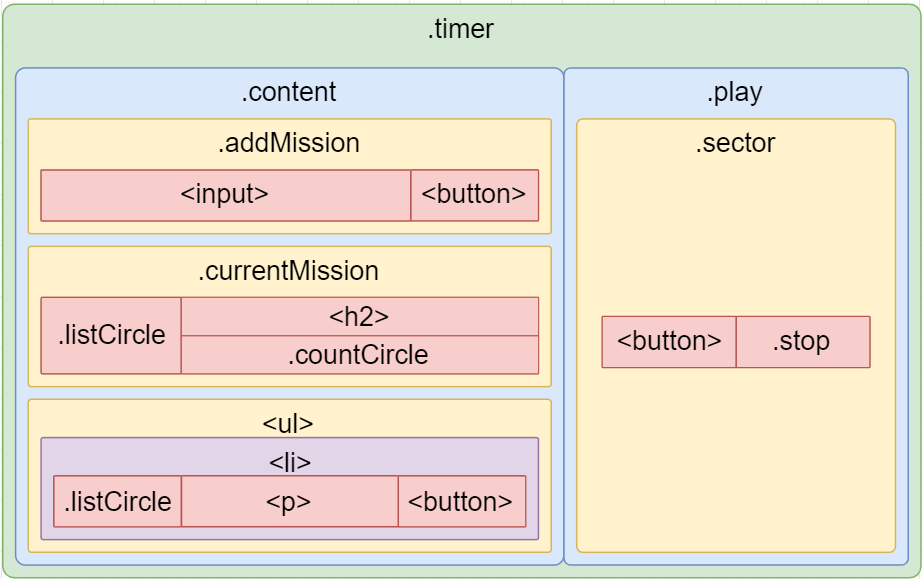
主要資訊 在網頁的左上方能讓使用者輸入新的事項，在框格右側有一個＋的按鈕可以點擊。
當下事項、時間及待辦事項大略如架構圖那樣排版，但因為使用 flexbox ，還加了一些 <div> 幫助排版。
播放大圓 這裡大概是整個排版裡面我最不懂的部分XD
1 2 3 4 5 6 7 8 9 .timer .play { min-width : 540px ; height : 540px ; border : #FF4384 4px solid; border-radius : 50% ; margin-top : 130px ; position : relative; background-image : radial-gradient (#FF4384 251px , transparent 19px ); }
另外到底要如何讓圓的邊邊隨著計時而填滿呢？OOXXStudo 純 CSS 繪製圓餅圖
到此為止，網站的樣貌：
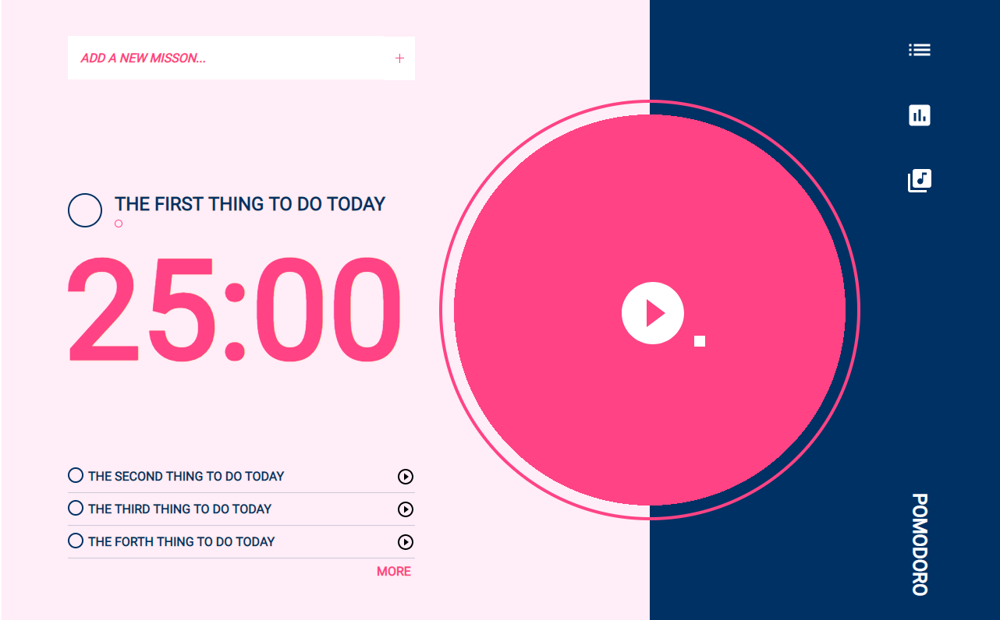
撰寫主畫面功能
寫到這裡，發現先將連結和一些功能完成，之後再增加其他功能比較容易做下去。因此先處理主畫面的功能部分。
資料結構 1 網頁需要一個陣列來裝當天待辦事項；每個待辦事項包含內容、時間和是否已完成。
1 2 3 4 5 6 7 8 9 10 11 12 13 14 15 16 17 todolist = [ { content: String (), time: 25 *60 , done: Boolean (), }, ]; tomatoRecord = { YYYY: { MM: { DD: Number (); }, }, };
新增 / 刪除待辦事項 欠了太多總是要還的（？）。由於我還沒有真的好好學過怎麼監聽事件，所以也不確定自己的方法算不算很土法煉鋼。
新增的部分，就是在點擊輸入框格的＋按鈕時，把輸入框格的內容放進 todolist 中。
另外有個排版的小細節是在 <input> 和 <button> 之間不能換行，不然會有接縫。
1 2 3 <form class ="addMission" > <input type ="text" placeholder ="ADD A NEW MISSON..." onblur ="this.placeholder='ADD A NEW MISSON...'" onfocus ="this.placeholder = ''" required > <button onclick ="addMission();" > ＋</button > </form >
1 2 3 4 5 6 7 8 9 10 11 12 13 function addMission ( let input = document .querySelector('.timer input' ); if (input.validity.valid) { todolist.push( { content: input.value, time: 25 * 60 , done: false }); input.value = '' ; update(); } }
刪除的部分就把第一筆資料拿掉（在 JavaScript 中是用 shift() ）；更新則需要稍微考慮一下空陣列的狀況。
1 2 3 4 5 6 7 8 9 10 11 12 13 14 15 16 17 18 19 20 21 22 23 24 25 26 27 28 29 30 31 32 33 34 35 36 37 38 function deleteMission ( if (todolist.length != 0 ) { todolist.shift(); update(); } } function update ( let currentMission = document .querySelector('.currentMission h2' ); let todoAmount = todolist.length; let todoUl = document .querySelector('.timer ul' ); let timeDiv = document .querySelector('.timer .time' ); let more = document .querySelector('.container a' ); if (todolist.length == 0 ) { currentMission.textContent = 'TO-DO LIST IS EMPTY' ; todoUl.innerHTML = '' ; timeDiv.textContent = '我心已空' ; more.setAttribute('style' ,'display:none' ); } else { currentMission.textContent = todolist[0 ].content; todoUl.innerHTML = '' ; for (let i = 1 ; i < todoAmount && i < 4 ; i++) { let newLi = document .createElement('li' ); newLi.innerHTML = '<div class="listCircle"></div><p>' + todolist[i].content + '</p><button><svg xmlns="http://www.w3.org/2000/svg" viewBox="0 0 24 24"><path d="M0 0h24v24H0z" fill="#FFEDF7" /><path d="M10 16.5l6-4.5-6-4.5v9zM12 2C6.48 2 2 6.48 2 12s4.48 10 10 10 10-4.48 10-10S17.52 2 12 2zm0 18c-4.41 0-8-3.59-8-8s3.59-8 8-8 8 3.59 8 8-3.59 8-8 8z" filled="#003164" /></svg></button>' ; todoUl.appendChild(newLi); } let time = todolist[0 ].time; timeDiv.textContent = (time / 60 < 10 ? '0' : '' ) + Math .floor(todolist[0 ].time / 60 ) + ':' + (time % 60 < 10 ? '0' : '' ) + todolist[0 ].time % 60 ; more.setAttribute('style' ,'' ); } }
至此，我的心開始像那用完的番茄一樣空（已開始語無倫次）：
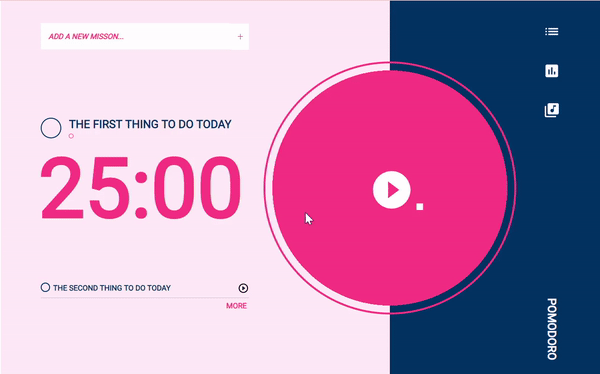
大幅調整 由於自己跟 JavaScript 太不熟，無法很快速想像出適當的程式結構，加上時間不足，最後只好先放棄寫文，埋頭狂寫再說。
更換圖檔 由於無法解決 <svg> 透明背景顯示為灰色的問題，我把圖檔全部改為 .png ，並且以 background-image 的方式呈現。
改變資料結構 將原本在物件中標記是否完成的方式，改為分別的 todolist 和 donelist ，方便管理。
1 2 3 4 5 6 7 8 9 10 let todolist = [ { content: 'THE FIRST THING TO DO TODAY' , working: false , time: 3 , tomato: 2 , }, ]; let doneList = [];
addEventListener() 前面提到我用了 onclick 的方式加上事件，後來去惡補六角的課程，發現應該用 addEventListener() 比較好維護，於是全部改用了。
番茄鐘功能 這部分我原本依據印象，想使用 setTimeout() 和 while 來重複執行，沒想到這樣只會使瀏覽器完全卡住；掙扎許久才改用 setInterval() ，發現完全不困難－－
休息狀態改為藍色樣式的方式是在 .wrap 上加上 .break ，並逐一改變顏色樣式；在讀秒完時，顏色就會自動改變，也會有音效。
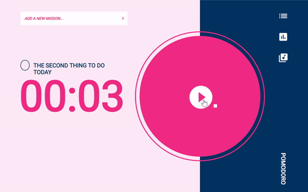
管理與統計待辦事項 這部分實在來不及做，只切好頁面就先放著。CSS三角形產生器 。
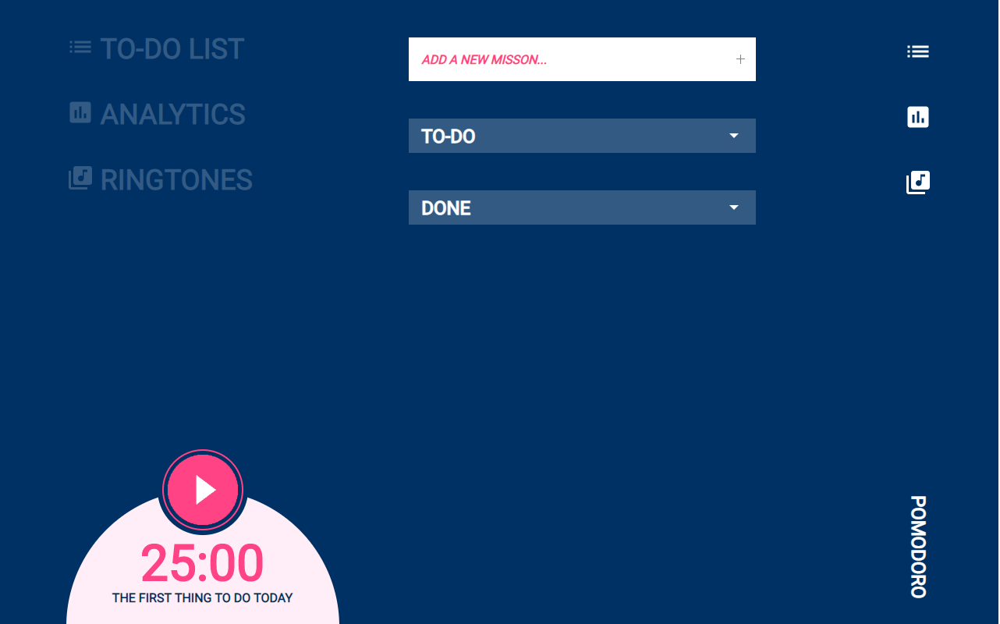
長條圖的結構如下：
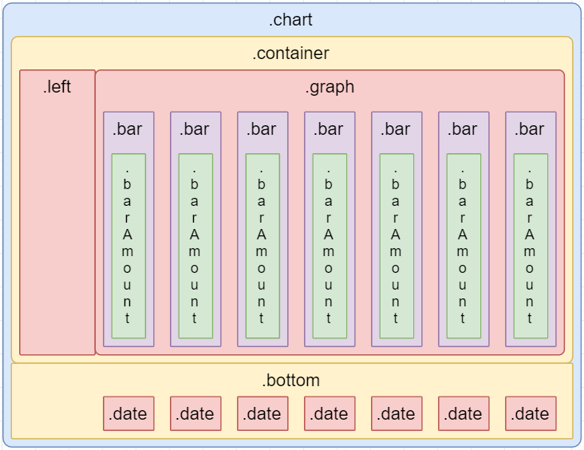
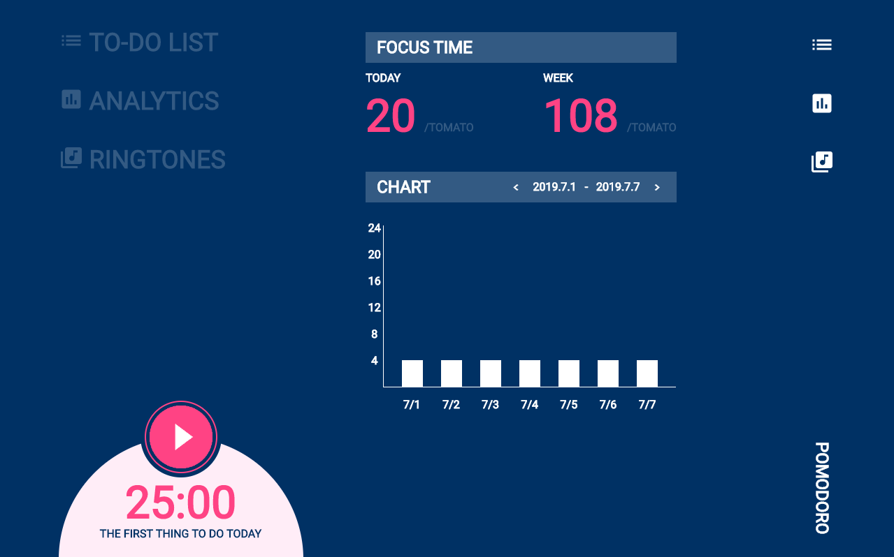
選擇音效 在 RINGTONES 頁面需要使用自訂的項目符號來選擇音效，爬文找到可以用 <label for=”ID”> 來做整個項目的呈現，並把 <input id=”ID”> 隱藏。
1 2 3 4 5 <li class ="radio" > <button class ="none" > <div class ="radioCircle" > </div > <div class ="radioText" > none</div > </button > </li >
CSS 的部分是在 <button> 含有 .checked 時，會改變 .radioCircle 的樣式。
1 2 3 4 5 6 7 8 9 10 11 12 .window .ringtones .radio button .radioCircle { width : 18px ; height : 18px ; border-radius : 50% ; border : #FFF 2px solid; margin : 2px 6px 2px 2px ; } .window .ringtones .radio button .checked .radioCircle { background-image : radial-gradient (#FF4384 5px , transparent 4px ); border-color : #FF4384 ; }
而 JavaSript 的部分則是偵測 change 事件來做出反應；包含改變樣式和改變音效兩個部分。
1 2 3 4 5 6 7 8 9 10 11 12 13 14 15 16 17 18 19 20 21 22 23 24 25 26 27 let ringtonesWorkRadios = document .querySelectorAll('.ringtones .work .radio button' );for (let i = 0 ; i < ringtonesWorkRadios.length; i++) { if (ringtonesWorkRadios[i].className == workRing) { ringtonesWorkRadios[i].classList.add('checked' ); } ringtonesWorkRadios[i].addEventListener('click' , function ( for (let j = 0 ; j < ringtonesWorkRadios.length; j++) { ringtonesWorkRadios[j].classList.remove('checked' ); } workRing = ringtonesWorkRadios[i].className; ringtonesWorkRadios[i].classList.add('checked' ); switch (workRing) { case 'none' : workAudio.src = '' ; break ; case 'default' : workAudio.src = 'music/alarm.mp3' ; workAudio.play(); break ; default : workAudio.src = 'music/' + workRing + '.mp3' ; workAudio.play(); } }, false ); }
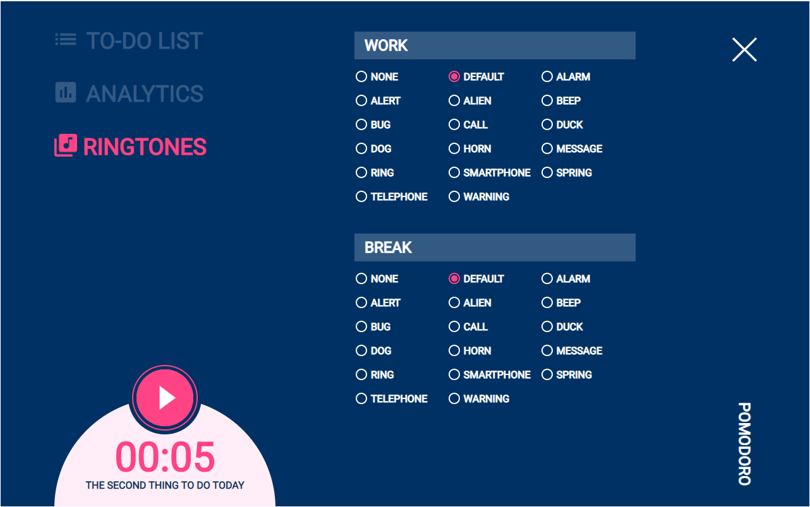
小結 以上，可能文章和功能多有遺漏，但是因為活動還在持續進行，必須往第二關邁進。